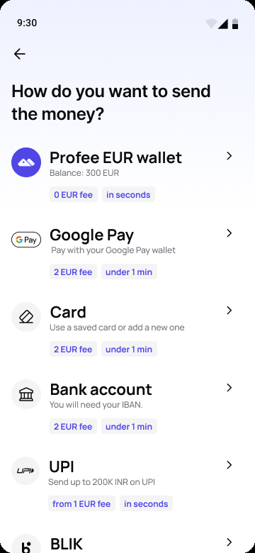
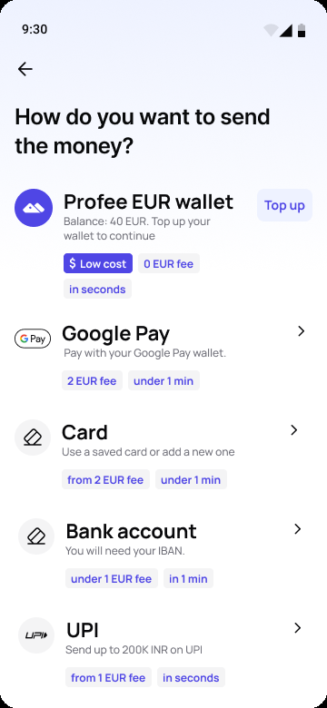
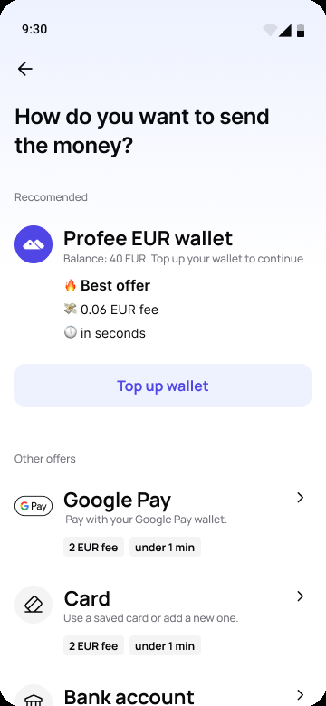

Profee · May – Jun 2026Май–июнь 2026
Since 2025 you can pay for a transfer from the Profee wallet – no fee, in seconds. But if the balance was short, you had to leave the transfer, top up in the wallet and start again. I put a Top up button right on the wallet in the payment step: first a quick, rough version to test the idea, then a louder one
С 2025 года перевод можно оплатить из кошелька Profee – без комиссии и за секунды. Но если денег на кошельке не хватало, приходилось выходить из перевода, пополнять кошелёк и начинать заново. Я добавила кнопку «Пополнить» прямо к кошельку на шаге оплаты: сначала быстрой черновой версией, чтобы проверить идею, потом – более заметной
Context
Контекст
On the payment step the wallet was first in the list and the cheapest option. But the row only showed the balance. If it wasn’t enough, the only way was out of the transfer: to the wallet, top up, and back to the start
На шаге оплаты кошелёк стоял первым и был самым выгодным способом. Но в строке был виден только баланс. Если его не хватало, выход был один – из перевода: в кошелёк, пополнить и заново с начала
The idea to top up right there came up as soon as wallets launched in 2025. It took until spring 2026 to get to it
Идея пополнять прямо здесь появилась сразу после запуска кошельков в 2025 году. Руки до неё дошли весной 2026
If the wallet is short, let people top it up where they notice it – in the transfer
Если на кошельке не хватает денег, пусть человек пополнит его там, где это заметил, – в переводе
Versions
Версии
The fastest thing we could ship: a Top up button on the wallet row, a line saying why – “Top up your wallet to continue” – and a Low cost tag. No new screens: the button opens the usual top-up, and then the transfer carries on
Самое быстрое, что можно было выпустить: кнопка «Пополнить» в строке кошелька, строка с объяснением – «Пополните кошелёк, чтобы продолжить» – и метка «Выгодно». Никаких новых экранов: кнопка открывает обычное пополнение, а после него перевод продолжается
When the check worked, I made a version that pushes hard on purpose: the wallet moves into a Recommended block with Best offer, its fee and speed, and a full-width Top up wallet button. Everything else goes under Other offers
Когда проверка сработала, я сделала версию, которая намеренно давит: кошелёк переезжает в блок «Рекомендуем» с пометкой «Лучшее предложение», комиссией и скоростью и кнопкой «Пополнить кошелёк» во всю ширину. Остальные способы – ниже, в «Других вариантах»



Results
Результаты
The quick check went out on Android on 25 May 2026 and on iOS at the end of June. For a month only Android had it, so iOS became the control – same weeks, no button. Share of weekly senders who topped up the wallet, three weeks before the launch against the month after:
Быстрая проверка вышла на Android 25 мая 2026, на iOS – в конце июня. Месяц кнопка была только на Android, поэтому iOS стал контрольной группой: те же недели, но без кнопки. Доля отправителей, которые пополняли кошелёк за неделю, – три недели до запуска против месяца после:
That’s about +3.6 pp on top of what iOS gained on its own. When iOS got the button, it caught up: 4.6% → 8.0% of senders in four weeks. There was no A/B test, so this is an estimate. iOS got Apple Pay top-ups on 29 May, which lifted the control too – if anything, the effect is understated. Google Pay top-ups reached Android on 20 May, but the jump came with the button, on 25 May
Это примерно +3,6 п. п. сверх того, что iOS прибавил сам. Когда кнопка появилась на iOS, он догнал Android: 4,6% → 8,0% отправителей за четыре недели. A/B-теста не было, так что это оценка. 29 мая на iOS появилось пополнение через Apple Pay, и оно подняло и контрольную группу – так что эффект скорее занижен. Пополнение через Google Pay пришло на Android 20 мая, но скачок случился вместе с кнопкой – 25 мая
What’s next
Что дальше
The louder version is a test of how hard we can push. If it doesn’t bring more top-ups than the quick one, we’ll ship a quieter design – the goal is more people paying from the wallet, not a louder screen
Более заметная версия – проверка того, насколько сильно можно давить. Если она не даст больше пополнений, чем быстрая, выпустим дизайн поспокойнее: цель – чтобы больше людей платили из кошелька, а не чтобы экран кричал громче
Reflection
Выводы
The idea had sat in the backlog since 2025. When we got to it, one button and one line were enough to test it, and the answer came within days of the launch. The polish went in after, where the data already said it was worth it
Идея лежала в бэклоге с 2025 года. Когда до неё дошли, чтобы её проверить, хватило одной кнопки и одной строки, а ответ пришёл через несколько дней после запуска. Красоту добавили потом – туда, где данные уже показали, что это того стоит